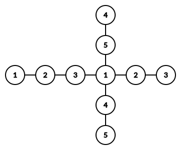
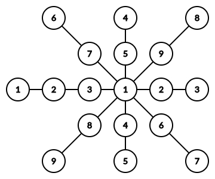

给定整数 $N$，你需要确定是否存在一棵 $2 N$ 个顶点的树，顶点标号从 $1$ 到 $2 N$，满足下列条件：
在树中，对于 $\forall 1 \leq i \leq N$，设顶点 $i$ 和顶点 $N + i$ 的权值为 $i$。
则：任取 $1 \leq i \leq N$，从顶点 $i$ 到顶点 $N + i$ 的路径上的所有顶点 (包含两个端点) 的权值异或和为 $i$。
如果存在，并给出一组构造。
共一行，包含一个正整数 $N$ ($N \leq 10^5$)。
第一行输出一个字符串，如果存在满足条件的树，则为 Yes，否则为 No。
如果存在，紧接着输出 $2 N - 1$ 行，每行两个整数，第 $i$ 行的整数 $a_i, b_i$ 表示树上 $u_i$ 和 $v_i$ 之间连有一条边。
你需要保证这 $2 N - 1$ 条边恰好构成一棵树。如果有多棵树满足条件，输出任意一组均可。
容易发现，当 $N$ 是 $2$ 的幂的时候，是不存在满足条件的树的。
这是因为，考虑两个 $N = 2^k$ 号顶点，它们之间的所有顶点的权值异或和为 $2^k$，而 $x \oplus x = 0$，因此它们之间所有顶点的点权异或和也应该为 $2^k$。
而实际上，除了这两个点外，其余所有顶点的点权中，位权为 $2^k$ 的位的值均为 $0$，从而无论如何异或，都异或不出 $2^k$，从而无解。
那么，对于其余的 $N$，情况又会如何呢？
观察样例：$1 - 2 - 3 - 1 - 2 - 3$，可以发现：这棵树 (条链) 有比较优美的性质：三个数 ($1, 2, 3$) 的异或和为 $0$。
尝试着将其推广：对于 $x, y, z$，如果 $x \oplus y \oplus z = 0$，则链 $x - y - z - x - y - z$ 中，如果只考虑这三个数，它也是满足条件的。
但是这样一条链上只有三个数，又该怎么办呢？
我们考虑将两条链 "缩合" 在一起。那怎么合并呢？可以发现，由于我们要合并得到一棵树，因此我们可以共用一个数：
比如，$1 \oplus 4 \oplus 5 = 0$，从而链 $1 - 4 - 5 - 1 - 4 - 5$ 也是满足条件的。将一个 $1$ "公用"，就得到了：
同理，由于相邻两个自然数 (小的为偶数) 的异或和均为 $1$。因此，可以通过类似的方法将它们插入到这棵树中 (比如 $1 \sim 9$)：
于是，我们就完成了除 $1$ 外所有奇数的构造。
那么，对于 $N$ 为 (非 $2$ 的幂次) 的偶数时，能不能构造出来呢？
还是从最简单小的非 $2$ 的幂次的偶数 —— $6$ 开始考虑。
我们尝试在 $N = 5$ 的图上添加 $2$ 个 "$6$" 点作为叶子。
这样一来，其余的点的路径都不会经过 $6$。于是，只需要让这两个 $6$ 路径上的所有顶点的异或和为 $6$ 即可。
不妨假设，这条路径过中心的那个 $1$，于是，剩下顶点的异或和需要为 $7$。
经过凑数，可以发现，$3 \oplus 4 = 7$，于是，我们将两个 $6$ 分别接在与 $1$ 相邻的 $3$ 和 $4$ 下面即可，如下图所示：
简单思考后，可以发现，这个算法对任意非 $2$ 的幂次的偶数均有效。
事实上，对于一个偶数 $N$，如果它不是 $2$ 的幂次，则设 $b = \left \lfloor \log_2 N \right \rfloor$，则 $N \oplus 1 = N + 1 = 2^b + \left( N - 2^b + 1 \right) = 2^b \oplus \left( N - 2^b + 1 \right)$，从而 $N = 2^b \oplus 1 \oplus \left( N - 2^b + 1 \right)$。
若 $N$ 为非 $2$ 的幂次的偶数，则 $1 < 2^b, N - 2^b + 1 < N$，而对于 $2 \sim N - 1$ 中的每个数 $v$，权为 $v$ 的点中至少一个与中央 $1$ 相连，因此，我们只需将两个 $N$ 接到与中央 $1$ 相邻的 $2^b$ 和 $N - 2^b + 1$ 下面即可完成构造。
最后注意一下输出方式，时间复杂度 $O \left( N \right)$。
#include <bits/stdc++.h>
#define lg2 std::__lg
#define EB emplace_back
typedef std::pair <int, int> pr;
int n;
std::vector <pr> E;
inline void link(int x, int y) {E.EB(std::minmax(x, y));}
int main() {
int i, u, v;
scanf("%d", &n);
if (n & (n - 1)) puts("Yes");
else return puts("No"), 0;
link(n + 1, n + 2);
for (i = 2; i < n; i += 2) link(1, i), link(1, i + 1), link(i, i + n + 1), link(i + 1, i + n);
if (!(n & 1)) u = 1 << lg2(n + 1), v = (n + 1) & ~u, link(u, 2 * n), link(v, n);
std::sort(E.begin(), E.end());
for (const pr &e : E) printf("%d %d\n", e.first, e.second);
return 0;
}
坑1：注意输出的时候是 $1 \sim 2 N$ 而不是像上图中一样 $1 \sim N$。
坑2：最后注意要将 $N$ 接到与中央 $1$ 相邻的两个顶点上，而不能接到远离它的顶点上。